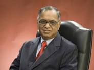

who is Narayana Murthy?
Nagavara Ramarao Narayana Murthy (born 20 August 1946) is an Indian billionaire businessman. He is the co-founder of Infosys, and has been chairman, chief executive officer (CEO), president, and chief mentor, before retiring and taking the title chairman emeritus.
Murthy was born and raised in Shidlaghatta, Karnataka. He graduated from National Institute of Engineering, University of Mysore with a bachelor's degree in electrical engineering and a master's from the Indian Institute of Technology Kanpur.
Before starting Infosys, Murthy worked with Indian Institute of Management Ahmedabad as chief systems programmer, and Patni Computer Systems in Pune (Maharashtra). He started Infosys in 1981 and was its CEO from 1981 to 2002, and chairman from 2002 to 2011. In 2011, he stepped down from the board and became chairman emeritus. In June 2013, Murthy was appointed as executive chairman for a period of five years.
Murthy has been listed among the 12 greatest entrepreneurs of our time by Fortune magazine. He has been described as the "father of the Indian IT sector" by Time magazine due to his contribution to outsourcing in India.Murthy has been honoured with the Padma Vibhushan and Padma Shri awards. He is the father-in-law of Rishi Sunak, the British MP and Chancellor of the Exchequer.
Early Life and Education
.jpg)
Narayana Murthy was born on 20 August 1946 in Shidlaghatta, Chikkaballapura district Karnataka. After completing his school education, he went to the National Institute of Engineering and graduated in 1967 with a degree in Electrical Engineering. In 1969 he received his master's degree from the Indian Institute of Technology Kanpur.
Career
.jpg)
Murthy first served as Research Associate under a faculty at IIM Ahmedabad and then later served as chief systems programmer.There he worked on India's first time-sharing computer system and designed and implemented a BASIC interpreter for Electronics Corporation of India Limited. He started a company named Softronics. When that company failed after about a year and a half, he joined Patni Computer Systems in Pune.
Murthy and six software professionals founded Infosys in 1981 with an initial capital injection of Rs 10,000, which was provided by his wife Sudha Murthy.Murthy served as the CEO of Infosys for 21 years from 1981 to 2002 and was succeeded by co-founder Nandan Nilekani. At Infosys he articulated, designed and implemented the Global Delivery Model for IT services outsourcing from India. He was chairman of the board from 2002 to 2006, after which he became Chairman of the board and Chief Mentor.In August 2011, he retired from the company, taking the title chairman Emeritus.
Murthy serves as an independent director on the corporate board of HSBC and has served as a director on the boards of DBS Bank, Unilever, ICICI and NDTV. He also serves as a member of the advisory boards and councils of several educational and philanthropic institutions,including Cornell University, INSEAD, ESSEC, Ford Foundation, the UN Foundation, the Indo-British Partnership, Asian Institute of Management, a trustee of the Infosys Prize, a trustee of the Institute for Advanced Study in Princeton, and as a trustee of the Rhodes Trust.He is also Chairman of the Governing board of Public Health Foundation of India.He serves on the Asia Pacific Advisory Board of British Telecommunications.In 2005 he co-chaired the World Economic Forum in Davos.
On 1 June 2013, Murthy returned to Infosys as Executive chairman and Additional Director. On 12 June 2014 it was announced that Murthy would step down as Executive chairman effective 14 June. He would continue as Non-Executive chairman until 10 October. On 11 October, Murthy was to be designated as chairman Emeritus.
Personal Life
.jpg)
His wife, Sudha Murthy, is a social worker and author.She does philanthropic work through the Infosys Foundation.
Murthy has two children, a son Rohan Murty and a daughter Akshata Murthy. On 1 June 2013, Rohan joined Infosys as an executive assistant to his father. He left Infosys effective 14 June 2014.Akshata is married to Rishi Sunak, the UK's Chancellor of the Exchequer and Conservative MP for Richmond (Yorks).
Awards and Honours
| YEAR | NAME | AWARDING ORGANISATION |
|---|---|---|
| 2014 | CIF Chanchlani Global Indian Award | Canada India Foundation |
| 2013 | 25 Greatest Global Indian Living Legends | NDTV |
| 2013 | Sayaji Ratna Award | Baroda Management Association |
| 2013 | Philanthropist of the Year | The Asian Award |
| 2012 | Hoover Medal | American Society of Mechanical Engineers |
| 2011 | NDTV Indian of the Year's Icon of India | NDTV |
| 2010 | IEEE Honorary Membership | Institute of Electrical and Electronics Engineers. |
| 2009 | Woodrow Wilson Award for Corporate Citizenship | Woodrow Wilson International Center for Scholars |
| 2008 | Padma Vibhushan | Government of India |
| 2008 | Officer of the Legion of Honor | Government of France |
| 2007 | Honorary Commander of the Order of the British Empire (CBE) | Government of United Kingdom |
| 2007 | IEEE Ernst Weber Engineering Leadership Recognition | Institute of Electrical and Electronics Engineers |
| 2003 | Ernst & Young World Entrepreneur Of The Year | Ernst & Young World Entrepreneur of the Year Jury |
| 2000 | Padma Shri | Government of India |
Books
- A Better India: A Better World, Penguin Books, 2009 ISBN 9780143068570
- A Clear Blue Sky: Stories and Poems on Conflict and Hope, Puffin Books India, 2017 ISBN 9780143331414
- The Wit and Wisdom of Narayana Murthy, Hay House, 2016 ISBN 9789385827020